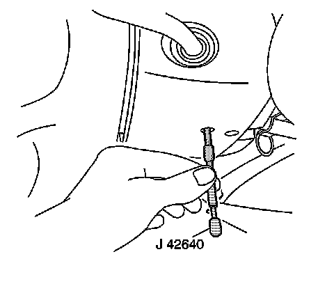
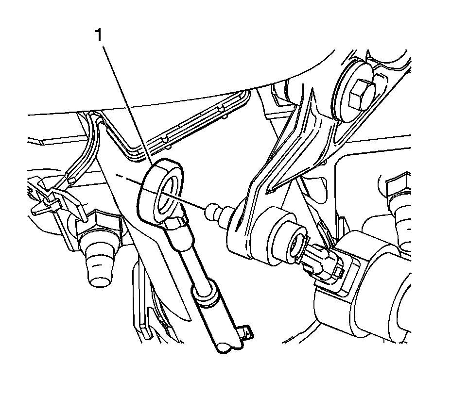
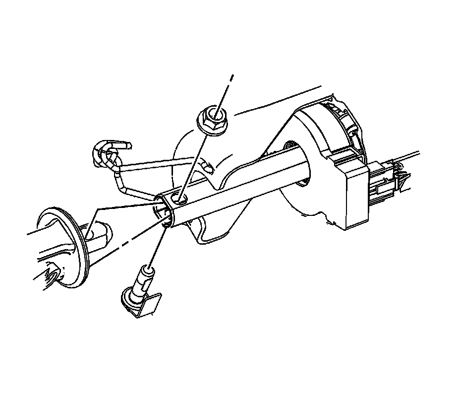
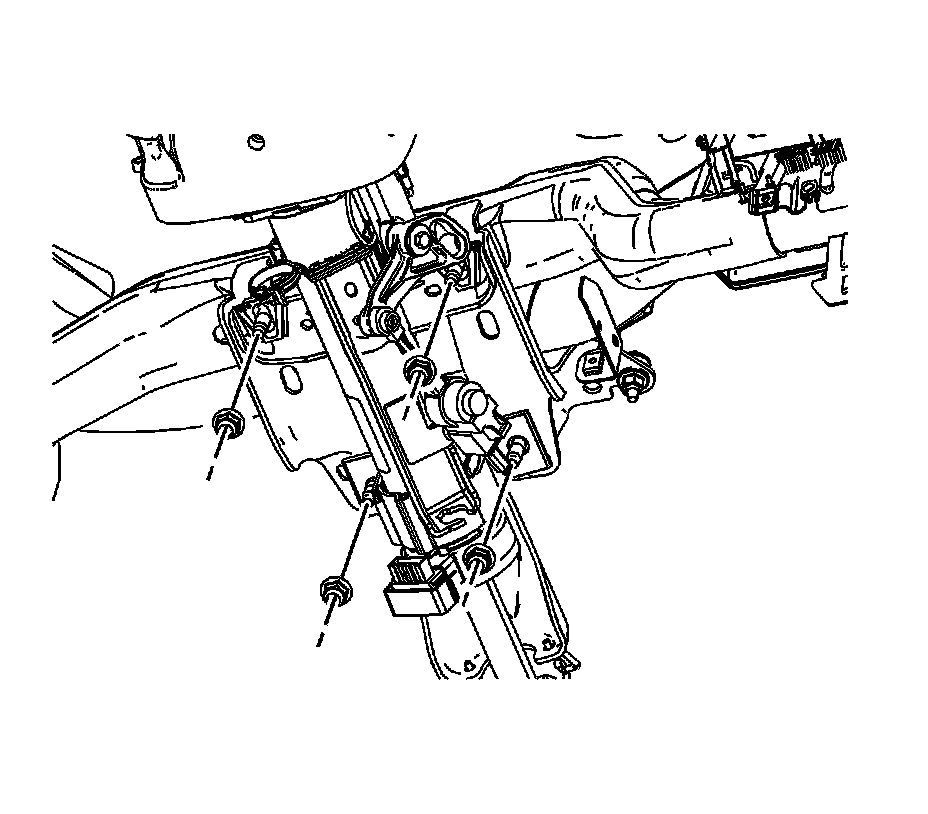

Steering Column Replacement
Steering Column Replacement
Tools Required
J 42640 Steering Column Anti-Rotation Pin
Removal Procedure
Caution: Refer to SIR Caution.
1. Disable the supplemental inflatable restraint (SIR) system. Refer to SIR Disabling and Enabling.
2. Remove the knee bolster.

Notice: The front wheels of the vehicle must be maintained in the straight ahead position and the steering column must be in the LOCK position before disconnecting the steering column or intermediate shaft. Failure to follow these procedures will cause improper alignment of some components during installation and result in damage to the SIR coil assembly.
3. Lock the steering column through the access hole in the lower trim cover using J 42640.

4. Disconnect the transmission shift cable (1) from the steering column.
5. Disconnect the steering column electrical connectors.

6. Remove the upper intermediate shaft pinch bolt and nut from the steering column. Separate the upper intermediate shaft from the steering column.

Notice: Once the steering column is removed from the vehicle, the column is extremely susceptible to damage. Dropping the column assembly on the end could collapse the steering shaft or loosen the plastic injections, which maintain column rigidity. Leaning on the column assembly could cause the jacket to bend or deform. Any of the above damage could impair the columns collapsible design. Do NOT hammer on the end of the shaft, because hammering could loosen the plastic injections, which maintain column rigidity. If you need to remove the steering wheel, refer to the Steering Wheel Replacement procedure in this section.
7. Remove the nuts from the steering column brackets.
Important: Note the location of the 2 washers at the lower steering column bracket. These washers must be reinstalled in the same location.
8. Remove the steering column and 2 washers from the vehicle.
9. If replacing the steering column, transfer all necessary components.
Installation Procedure
Caution: In order to ensure the intended function of the steering column in a vehicle during a crash and in order to avoid personal injury to the driver, perform the following:
^ Tighten the steering column lower fasteners before you tighten the steering column upper fasteners. Failure to do this can damage the steering column.
^ Tighten the steering column fasteners to the specified torque. Overtightening the upper steering column fasteners could affect the steering column collapse.
Important: Install the 2 washers in the same location at the lower steering column bracket.
Install the steering column and 2 washers to the vehicle.
Notice: Refer to Fastener Notice.
1. Install the lower steering column support bracket nuts.
Tighten the nuts to 27 N.m (20 lb ft).
2. Install the upper steering column bracket nuts.
Tighten the nuts to 27 N.m (20 lb ft).
Important: The intermediate shaft pinch bolt is held by a keeper and not to be tightened. To obtain proper torque, tighten at the intermediate shaft nut.
3. Connect the upper intermediate shaft to the steering column.
4. Install the upper intermediate shaft pinch bolt and nut.
Tighten the upper intermediate shaft nut to 62 N.m (46 lb ft).
5. Connect the steering column electrical connectors to the vehicle wiring harness.
6. Connect the transmission shift cable (1) to the steering column.
7. Install the knee bolster.
8. Enable the SIR system. Refer to SIR Disabling and Enabling.
9. Remove J 42640 from the steering column.